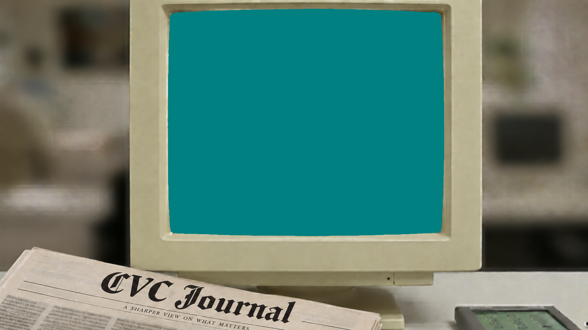

Welcome to the Calgary Vision Centre time machine.
These are real web pages from 1996 to 2010, served by the Internet Archive's Wayback Machine and running on a 1993 monitor. Open a program and browse the web the way it was.
Then scroll down. The 2026 version of us is right below.
Browsing the 1996 web on a 1993 monitor is neat. Your eyes, though, deserve 2026 technology. We are Calgary Vision Centre, and the modern version of us is right below this screen.